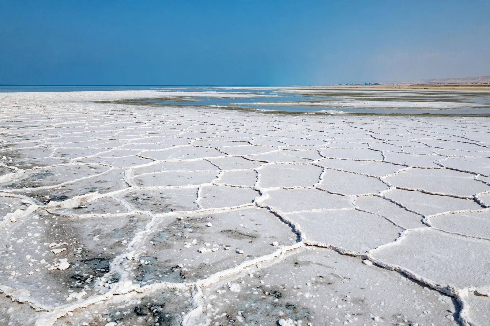

| Sabkha | |
|---|---|
 Coastal sabkha, Arabian Peninsula | |
| Type | Supratidal salt flat / evaporite environment |
| Typical minerals | Gypsum, anhydrite, halite, dolomite, aragonite |
| Classic locality | Trucial Coast (Abu Dhabi), Persian Gulf |
A sabkha (Arabic: سبخة) is a supratidal flat or salt flat, typically found along arid coasts, in which evaporite minerals accumulate as a result of the evaporation of saline groundwater and occasional marine flooding. The term derives from the Arabic word for a salt flat or salt marsh. Sabkhas form just above normal high-tide level on low-gradient coasts where rainfall is minimal and evaporation intense.
Seawater floods the flat during storms and spring tides and seeps upward from the shallow water table by capillary action. As it evaporates, it precipitates a sequence of minerals—carbonates first, then gypsum, then halite—within and on top of the sediment. Because the brines become enriched in magnesium and depleted in calcium, early dolomitization of the carbonate muds is characteristic, making sabkhas key modern analogues for the origin of ancient dolomite formations. Displacive growth of gypsum and anhydrite nodules produces the distinctive "chicken-wire" texture recognised in ancient evaporite sequences such as the Zechstein.
Coastal sabkhas, exemplified by the extensive flats of Abu Dhabi's Trucial Coast, are fringed by mangroves, algal mats, and lagoons. Continental sabkhas occur inland in desert basins, fed by groundwater and episodic flash floods, as in parts of North Africa and central Australia. Microbial mats and stromatolites on sabkha surfaces are studied as analogues for early life on Earth and possibly Mars.
Sabkha soils are notoriously problematic for construction: salts corrode concrete and steel, and wetting can dissolve salt cement and collapse the soil structure, a hazard faced by roads and buildings across the Gulf states.
Evaporite · Salt flat · Anhydrite · Dolomite · Sedimentary rock